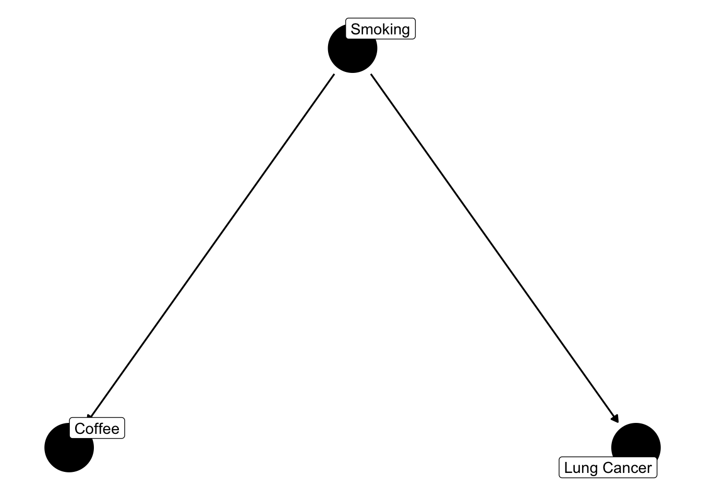
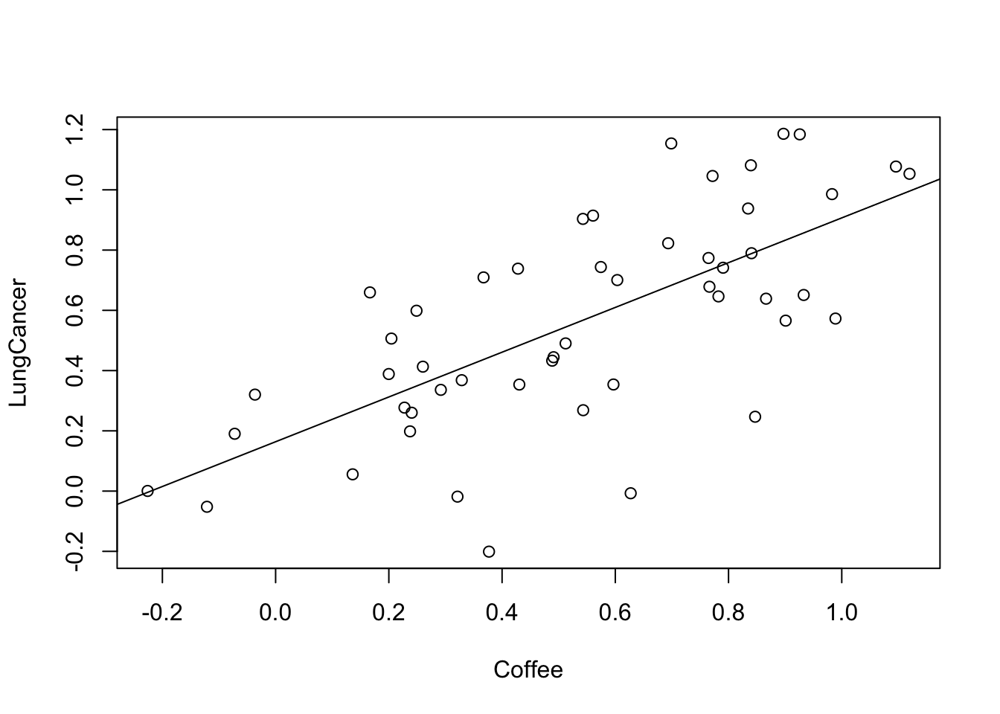
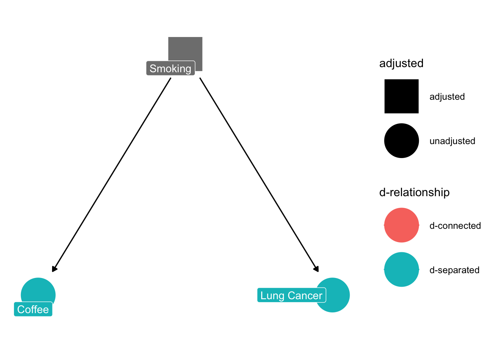
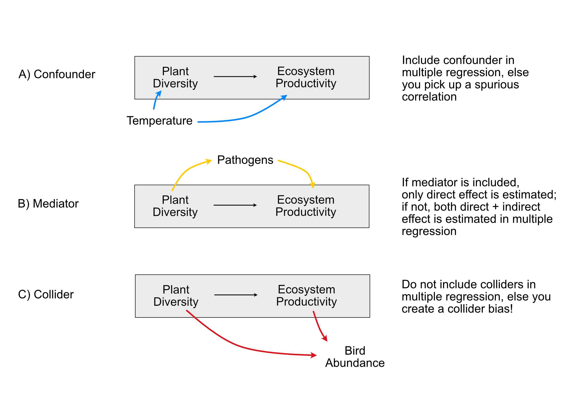
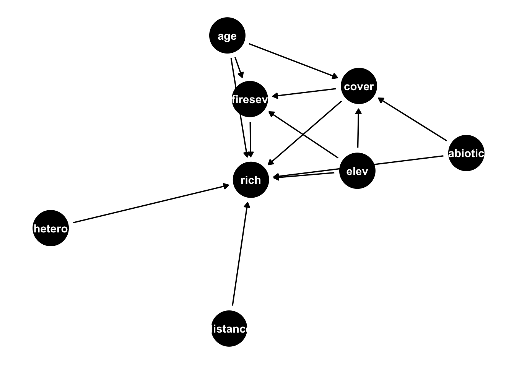
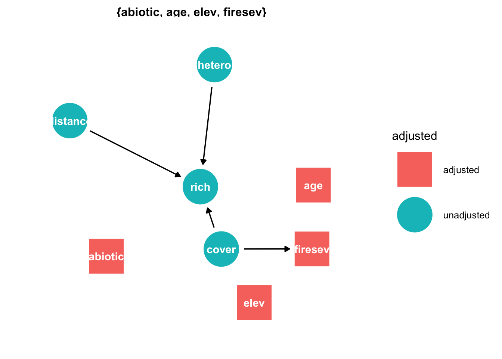
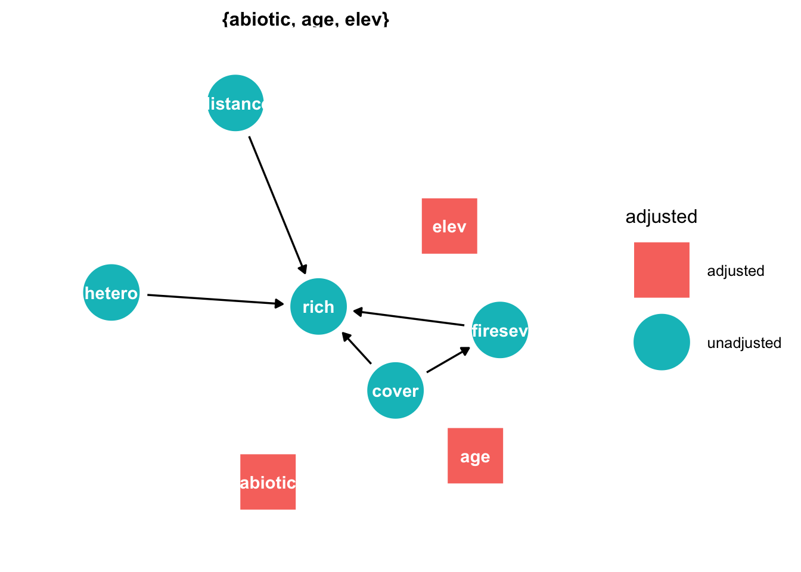

The most fundamental distinction in strategies for model choice is if we want to estimate effects, or if we want to predict. If we want to estimate effects, we nearly always want to estimate causal effects.
Let me first define what we mean by “a causal effect”: if we have a system with a number of variables, the causal effect of A on B is the change in B that would happen if we changed A, but kept all other aspects of this system constant.
Assume we look at the effect of coffee consumption on Lung Cancer. Assume further that there is no such effect. However, there is an effect of smoking on lung cancer, and for some reason, smoking also affects coffee consumption.
It is common to visualize and analyze such relationships in a causal graph. Here, I use the ggdag package
library(ggdag)
Attaching package: 'ggdag'
The following object is masked from 'package:stats':
filter
library(ggplot2)theme_set(theme_dag())dag =confounder_triangle(x ="Coffee", y ="Lung Cancer", z ="Smoking") ggdag(dag, text =FALSE, use_labels ="label")

We can use the ggdag package (or to be more exact: the underlying daggitty package) to explore the implications of this graph. The way I created the graph already includes the assumption that we are interested in the effect of Coffee on Lung Cancer. I can use the function ggdag_dconnected() to explore if those two are d-connected, which is just a fancy word for correlated.
ggdag_dconnected(dag, text =FALSE, use_labels ="label")

In this case, the plot highlights me to the fact that Coffee and Lung cancer d-connected. What that means is: if I plot coffee against lung cancer, I will see a correlation between them, even though coffee consumption does not influence lung cancer at all. We can easily confirm via a simulation that this is true:
So, if we would fit a regression of LungCancer ~ Coffee, we would at least conclude that there is a correlation between the two variables. Many people would even go a step further, and conclude that Coffee consumption affects lung cancer. This is a classical misinterpretation created by the confounder smoking. Realizing this, I could ask the ggdag_dconnected function what would happen if I control for the effect of smoking.
ggdag_dconnected(dag, text =FALSE, use_labels ="label", controlling_for ="z")

The result conforms with our intuition - once we control for smoking, there will be no correlation between Coffee and Lung Cancer (because there is no causal effect between them). In causal lingo, we say the two are now d-separated.
6.2 How to control?
But how do we control for the confounder smoking?
6.2.1 Experimental control
The conceptually easiest approach is: we perform a controlled experiment. The entire idea experiments is that we vary only one (or a few) factors, keeping the others constant, and thus we are able to “see” causal effects directly. So, if we did an experiment with people that all smoke the same, varying coffee, we would get the right result:
Which us to an important point: people that run controlled experiments always estimate causal effects, unless something went wrong with the control. Actually, all advice regarding experimental design (control, randomization) is aimed are removing any possible confounding with other factors, so that we can isolate causal effects.
6.2.2 Synthetic control
In observational data, we have to use statistical methods to achieve synthetic control. Luckily, we have a great tool for that: the multiple regression.
The multiple regression can estimate the effect of coffee, corrected for the effect of smoking. Thus, by including smoking in the multiple regression, we are “virtually” holding smoking constant, thus allowing us to estimate the causal effect of coffee. Let’s try this out:
What we have just seen is an example of a causal analysis. The goal of a causal analysis is to control for other variables, in such a way that we estimate the same effect size we would obtain if only the target predictor was manipulated (as in a randomized controlled trial). If we are after causal effects, the correct selection of variables is crucial, while it isn’t if we just want to predict.
You probably have learned in your intro stats class that, to do so, we have to control for confounders. I am less sure, however, if everyone is clear about what a confounder is. In particular, confounding is more specific than having a variable that correlates with predictor and response. The direction is crucial to identify true confounders. Imagine that there is a third variable that is included
dag =collider_triangle(x ="Coffee", y ="Lung Cancer", m ="Nervousness") ggdag(dag, text =FALSE, use_labels ="label")
Let’s simulate some data according to this structure
Call:
lm(formula = LungCancer ~ Coffee + nervousness)
Residuals:
Min 1Q Median 3Q Max
-0.316061 -0.053494 0.002907 0.071460 0.164066
Coefficients:
Estimate Std. Error t value Pr(>|t|)
(Intercept) 0.07886 0.02575 3.063 0.00284 **
Coffee -0.90108 0.04466 -20.179 < 2e-16 ***
nervousness 0.88282 0.03307 26.696 < 2e-16 ***
---
Signif. codes: 0 '***' 0.001 '**' 0.01 '*' 0.05 '.' 0.1 ' ' 1
Residual standard error: 0.09188 on 97 degrees of freedom
Multiple R-squared: 0.8811, Adjusted R-squared: 0.8787
F-statistic: 359.5 on 2 and 97 DF, p-value: < 2.2e-16
this time, the univariate regression gets it right:
fit1 <-lm(LungCancer ~ Coffee)summary(fit1)
Call:
lm(formula = LungCancer ~ Coffee)
Residuals:
Min 1Q Median 3Q Max
-0.51061 -0.21159 -0.00986 0.17769 0.48695
Coefficients:
Estimate Std. Error t value Pr(>|t|)
(Intercept) 0.55449 0.05342 10.380 <2e-16 ***
Coffee -0.08077 0.09314 -0.867 0.388
---
Signif. codes: 0 '***' 0.001 '**' 0.01 '*' 0.05 '.' 0.1 ' ' 1
Residual standard error: 0.2641 on 98 degrees of freedom
Multiple R-squared: 0.007616, Adjusted R-squared: -0.00251
F-statistic: 0.7521 on 1 and 98 DF, p-value: 0.3879
What we’ve seen here is a collider bias - a collider is a variable that is influenced by predictor and response. Although it correlates with predictor and response, correcting for it (or including it) in a multiple regression will create a bias on the causal link we are interested in (Corollary: Including all variables is not always a good thing).
There is an entire framework to analyze which variables you need to include in the regression to achieve proper control (Pearl 2000, 2009). In the following picture, I have summarized the three basic structures. The one that we haven’t discussed yet is a mediation structure. A mediator is an intermediate variable that “mediates” an effect between exposure and response.

How do we deal with the basic causal structures colliders, mediators and confounders in a regression analysis? Start by writing down the hypothesis / structure that you want to estimate causally (for example, in A, B “Plant diversity” -> Ecosystem productivity). Then
Control for all confounding structures
Do not control for colliders and other similar relationships, e.g. “M-Bias” (red paths).
It depends on the question whether we should control for mediators (yellow paths).
Note: If other variables are just there to correct our estimates, they are nuisance parameters (= we are not interested in them), and we should later not discuss them, as they were not themselves checked for confounding (Table 2 fallacy).
Tip
The best practical guidance paper I know on estimating causal effects is Lederer et al., 2018, “Control of Confounding and Reporting of Results in Causal Inference Studies. Guidance for Authors from Editors of Respiratory, Sleep, and Critical Care Journals” which is available here.
Case study 1
Take the example of the past exercise (airquality) and assume, the goal is to understand the causal effect of Temperature on Ozone (primary hypothesis). Draw a causal diagram to decide which variables to take into the regression (i.e. noting which are confounders, mediators or colliders), and fit the model.
Solution
Solar.R could affect both Temp, Ozone -> Coufounder, include
Wind could affect Temp, Ozone -> Coufounder, include. Alternatively, one could assume that Temp is also affecting Wind, then it’s a mediator
I would not include Month, as the Month itself should not affect Ozone, it’s the Temp, Solar.R of the month that must have the effect. It’s more like a placeholder, but if you include it it will nearly act as a collider, because it can snitch away some of the effects of the other variables.
Let’s take a more complicated example. We will use data from Grace & Keeley (2006), who try to understand plant diversity following wildfires in fire-prone shrublands of California. The authors have measured various variables, and they have a specific hypothesis how those are related (see below).
For this exercise, I want to assume that we are particularly interested in the causal effect of cover on species richness. I have specified this in the dag above already. With the ggdag_paths() command, I can isolate all paths that would create a correlation between cover and richness
ggdag_paths(dag)

Looking at the paths, I can see confounding structures, for example for age, abiotic and elevation. So I should definitely control for them. The function
ggdag_adjustment_set(dag)

helps me by suggesting which confounders I should control for. Note that the function doesn’t suggest to adjust for mediation structures per default, but keeps them in the graph, so you have to decide what to do with them. You can directly ask to include adjustment for mediation if you run
ggdag_adjustment_set(dag, effect="direct")

in this case, plot suggest to adjust for fireseverity, to isolate the direct effect of cover on richness.
So, the model we should fit is
fit =lm(rich ~ cover + abiotic + elev + firesev + age, data = keeley)summary(fit)
Call:
lm(formula = rich ~ cover + abiotic + elev + firesev + age, data = keeley)
Residuals:
Min 1Q Median 3Q Max
-29.146 -8.030 0.033 7.909 37.819
Coefficients:
Estimate Std. Error t value Pr(>|t|)
(Intercept) 13.033165 11.432393 1.140 0.258
cover 6.692065 4.754448 1.408 0.163
abiotic 0.790552 0.182962 4.321 4.24e-05 ***
elev 0.007117 0.005565 1.279 0.204
firesev -1.285966 0.946084 -1.359 0.178
age -0.176153 0.121290 -1.452 0.150
---
Signif. codes: 0 '***' 0.001 '**' 0.01 '*' 0.05 '.' 0.1 ' ' 1
Residual standard error: 12.23 on 84 degrees of freedom
Multiple R-squared: 0.3815, Adjusted R-squared: 0.3446
F-statistic: 10.36 on 5 and 84 DF, p-value: 9.213e-08
6.4.1 Table II fallacy
When reporting this, note that we have only corrected the relationship rich ~ cover for confounding. Consequently, we should not report the entire regression table above, or at least make a clear distinction about which variables have been corrected, and which haven’t.
The blind reporting of the entire regression table is known as Table II fallacy (because regression tables are often Table II in a paper).
6.4.2 Structural equation models (SEMs)
But what if we are interested in all the causal relationships? If we have a graph already, the best option is to fit a structural equation model.
Structural equation models (SEMs) are models that are designed to estimate entire causal diagrams. For GLMs responses, you will currently have to estimate the DAG (directed acyclic graph) piece-wise, e.g. with https://cran.r-project.org/web/packages/piecewiseSEM/vignettes/piecewiseSEM.html. For linear SEMs, we can estimate the entire DAG in one go. This also allows to have unobserved variables in the DAG. One of the most popular packages for this is lavaan. I will show here only an example using piecewiseSEM.
library(piecewiseSEM)mod =psem(lm(rich ~ distance + elev + abiotic + age + hetero + firesev + cover, data = keeley),lm(firesev ~ elev + age + cover, data = keeley), lm(cover ~ age + elev + hetero + abiotic, data = keeley))summary(mod)
Perform a causal, a predictive and an exploratory analysis of the Swiss fertility data set called “swiss”, available in the standard R data sets. Target for the causal analysis is to estimate the causal (separate direct and indirect effects) of education on fertility, i.e. lm(Fertility ~ Education, data = swiss).
Solution
Agriculture, Catholic could be seen as confounders or mediators, depending on whether you think Education affects the number of people being in Agriculture or Catholic, or vice versa
Infant mortality could be a mediator or a collider, depeding on whether you think fertility -> infant mortality or infant mortality -> fertility. I would tend to see it as a mediator.
For all mediators: remember that if you want to get the total (indirect + direct) effect of education on fertility, you should not include mediators. If you want to get the direct effect only, they should be included.
Tip
GAMs are particularly useful for confounders. If you have confounders, you usually don’t care that the fitted relationship is a bit hard to interpret, you just want the confounder effect to be removed. So, if you want to fit the causal relationship between Ozone ~ Wind, account for the other variables, a good strategy might be:
library(mgcv)
Loading required package: nlme
This is mgcv 1.8-40. For overview type 'help("mgcv-package")'.
fit =gam(Ozone ~ Wind +s(Temp) +s(Solar.R) , data = airquality)summary(fit)
In this way, you still get a nicely interpretable linear effect for Wind, but you don’t have to worry about the functional form of the other predictors.
Case study: Life satisfaction
The following data set contains information about life satisfaction (lebensz_org) in Germany, based on the socio-economic panel.
library(EcoData)?soep
Perform a causal analysis of the effect of income on life satisfaction, considering possible confounding / mediation / colliders.
Solution
Nearly all other variables are confounders, gesund_org could als be a collider
Might consider splitting data into single households, families, as effects could be very different. Alternatively, could add interactions with single, families and / or time to see if effects of income are different
A possible model is
fit <-lm(lebensz_org ~sqrt(einkommenj1) + syear + sex + alter + anz_pers + bildung + erwerb + gesund_org, data = soep)summary(fit)
Call:
lm(formula = lebensz_org ~ sqrt(einkommenj1) + syear + sex +
alter + anz_pers + bildung + erwerb + gesund_org, data = soep)
Residuals:
Min 1Q Median 3Q Max
-8.7735 -0.7843 0.0966 0.9387 4.9146
Coefficients:
Estimate Std. Error t value Pr(>|t|)
(Intercept) -3.257e+01 1.443e+01 -2.256 0.024072 *
sqrt(einkommenj1) 4.741e-04 1.661e-04 2.855 0.004307 **
syear 2.032e-02 7.158e-03 2.838 0.004541 **
sex 6.830e-02 2.073e-02 3.296 0.000984 ***
alter 1.272e-02 7.116e-04 17.882 < 2e-16 ***
anz_pers 7.040e-02 7.753e-03 9.081 < 2e-16 ***
bildung 2.027e-02 3.762e-03 5.387 7.23e-08 ***
erwerb -1.267e-02 8.762e-03 -1.446 0.148277
gesund_org -8.283e-01 1.139e-02 -72.728 < 2e-16 ***
---
Signif. codes: 0 '***' 0.001 '**' 0.01 '*' 0.05 '.' 0.1 ' ' 1
Residual standard error: 1.479 on 21611 degrees of freedom
(1902 observations deleted due to missingness)
Multiple R-squared: 0.2172, Adjusted R-squared: 0.2169
F-statistic: 749.6 on 8 and 21611 DF, p-value: < 2.2e-16
Note that you shouldn’t interpret the other variables (Table II fallacy) in a causal analysis, unless the other variables are analyzed / corrected for confounders / colliders.